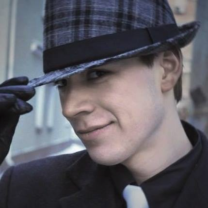

Hi! My name is Andrii, I am software developer who
specializes in C++ programming language. I have considerable
experience in dealing with people with different cultural
background at work. I like being a part of something that
drastically changes everyone's life and I would appreciate you
bring me this opportunity. I could overstate here a lot about
myself, however the opposite, I hope, encourage you to meet me
personally.
- Skills
-
Frameworks/Tools
- Python, C++
- IPC: apache thrift
- experience in Linux userspace development, general understanding of kernel-space.
- Multithreading
- c++11 standard
- make, cmake
- networking
- ATAPI protocol
- Experience
-
Fujitsu technology solutions
Sr. software developer June 2016 - present
-
Support an enterprise tool that monitors hard drives and configures
RAIDs
-
responsibilities: Linux Multiple Device implementation, developing
communication API for other fujitsu modules
-
Stack: C/C++ (C++11), HippoMocks, ATAPI protocol, libcurl, boost, SNMP
Harman
Software developer June 2015 - June 2016
-
module for monitoring overall operating system (GenIVI linux
distribution) status, data collecting for post-morterm analysis for
automotive head unit
- responsibilities: developing log processing system
- Stack: c++11, docker, apache thrift, systemd/journald API, DBus, yocto
GlobalLogic
Junior software developer Mar 2014 - Jan 2015
Developing software for Modular Cable Termination System that
enables video-on-demand, broadcast, switched digital video based on
DOCSIS (Data Over Cable Service Interface Specifications) protocol
Responsibilities: bugfixing, Integration testing
Stack: C++, python, Perl
State bureau "Luch"
software engineer Feb 2012 - Feb 2014
Developing stand for semi-natural simulation for unmanned aircraft
system
Responsibilities: the whole software part.
Stack: C/C++, WinRTX, Qt
- Links
-
- Education
-
National Technical University of Ukraine "Kiev Polytechnic
Institute"
Major: System Engineering
Minor: Software Engineering